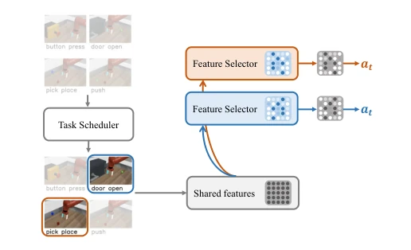
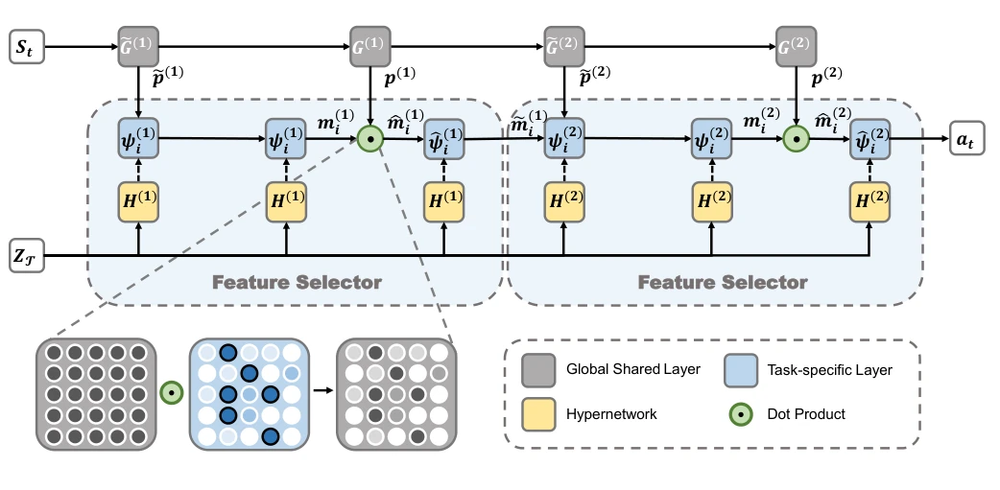
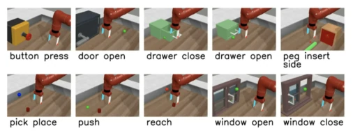
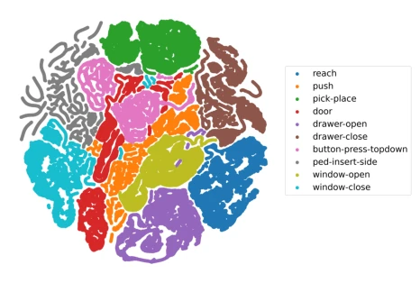
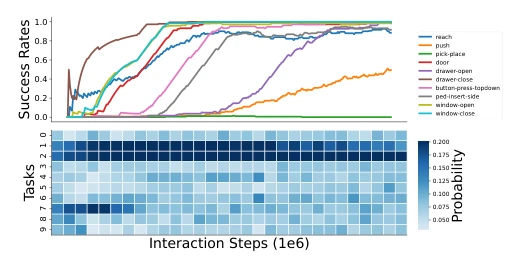

This T3S can be regarded as another 'patchwork' model in the MTRL field—combining the ideas of Hypernetwork and Curriculum Learning to attempt to solve the interference problem between tasks. Although the authors claim 'fine-grained' feature selection is novel, essentially it still uses a hypernetwork to generate masks to dynamically adjust shared layers, which is no longer new in NLP and CV. The biggest criticism point is that all experiments are run in the simulator Meta-World, without testing on real hardware; for embodied intelligence, the sim-to-real gap remains huge. However, compared to CAGrad, this gradient scalpel, T3S is indeed much faster, counting as a pragmatic engineering choice, just that 'generalizability' is blown a bit too much, after all weights still need manual tuning, and no real physical interaction verification is involved, so deployability is questionable. For researchers pursuing extreme performance, this might be a good baseline, but for teams truly wanting to deploy on robots, simulation results might just be 'talking on paper'.
The core pain point of Multi-Task Reinforcement Learning (MTRL) is 'Destructive Interference', meaning gradient conflicts between tasks lead to performance degradation. Existing methods each have shortcomings: MT-SAC [13] shares parameters simply and crudely, easily dragging each other down; MMoE [15] although uses gating networks, expert output weighting is too coarse, unable to distinguish shared and specific features; Soft Module [17] routes by module as unit, granularity still not fine enough. Additionally, gradient-based optimization methods like CAGrad [19] although can alleviate conflicts, but require a large number of extra optimization steps, computational cost is too high. Therefore, how to achieve fine-grained feature decoupling and intelligent task sampling while maintaining parameter sharing is the key to improving MTRL efficiency.
The T3S framework includes a Feature Selector and a Task Scheduler. The overall process is based on the SAC algorithm, but introduces global shared layers and task-specific layers in the network structure. The Feature Selector utilizes a Hypernetwork to receive Task ID as context, generating a Soft Mask to perform element-wise filtering on shared features, achieving feature-level fine-grained sharing. The Task Scheduler dynamically adjusts sampling probability based on task progress (success rate) and learning speed (performance increment), tasks with slow progress and low speed have higher sampling probability. Combined, both reduce parameter conflicts and avoid overfitting on simple tasks. Algorithm pseudo-code shows, evaluation phase updates sampling distribution, training phase samples task set according to distribution, finally update SAC network parameters. This design enables the model to adaptively balance the difficulty of different tasks, without manual intervention on task priorities, thereby maintaining high sample efficiency in complex multi-task environments.

Fig. 1. Overview of our framework T3S. To balance the task difficulty, the task scheduler first selects challenging tasks for the multi-task agent from the whole task set based on the performance metric. Then the feature selector learns which features to be shared between tasks and which not, by filtering task-specific features from globally shared features in an end-to-end manner.

Fig. 2. Visualisation of our network architecture, showing the globally shared network and feature selectors respectively. The role of the feature selectors is to extract task-specific features from the globally shared network using the soft masks. The number of feature selectors can be defined according to the task complexity. Here the solid line (black) denotes the data flow, and the dashed line (black) denotes the weights flow.
Experiments are conducted on the Meta-World benchmark, including MT10 and MT50 task sets (fixed and random targets). Baselines include MT-SAC [13], MMoE [15], Soft Module [17], and CAGrad [19]. The main metric is Average Success Rate. Results show T3S success rate reaches 0.95 on MT10, significantly better than Soft Module (0.67) and MT-SAC (0.47). Compared with CAGrad, T3S final performance is comparable, but single-step update speed is about 20 times faster. Ablation experiments show, removing the scheduler leads to performance drop, and task progress metric contributes more than learning speed metric. t-SNE visualization confirms soft masks can cluster similar task features.

Fig. 3. Illustration of the 10 robotic arm manipulation tasks on MT10.

Fig. 6. Visualization of soft masks for different tasks in MT10-RAND. We rollout different tasks and extract the masks from the policy. All masks are grounded in different clusters using t-SNE.
其他图片Other Figures

Fig. 5. Sampling history of the task scheduler. (Top: line plot) The success rate for each task in MT10-RAND environment. The x-axis denotes the number of samples during training. (Bottom: square tiles) The sampling history of each task. Each tile represents the probability of sampling over a period, where darker colors denote higher probability.